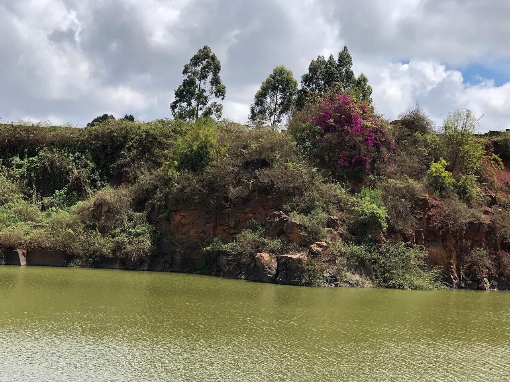

Top four places to visit in Kikuyu
Bounce on marshy ground at Ondiri swamp
Ondiri swamp offers a soothing place to walk on as the marshy ground swing beneath your legs.
Hike and explore Nachu hills and caves
Do not miss out on a fun hike on Nachu hills as you explore exciting caves along the trail.
Catch a local match at Kanjeru Stadium
Experience the adrenaline rush as local teams clash like Titans on this iconic stadium.

Have a chill boat ride at the alluring Rungiri dam
The dam offers a place for a lazy afternoon where you can ride a boat, fish, and watch professional divers.